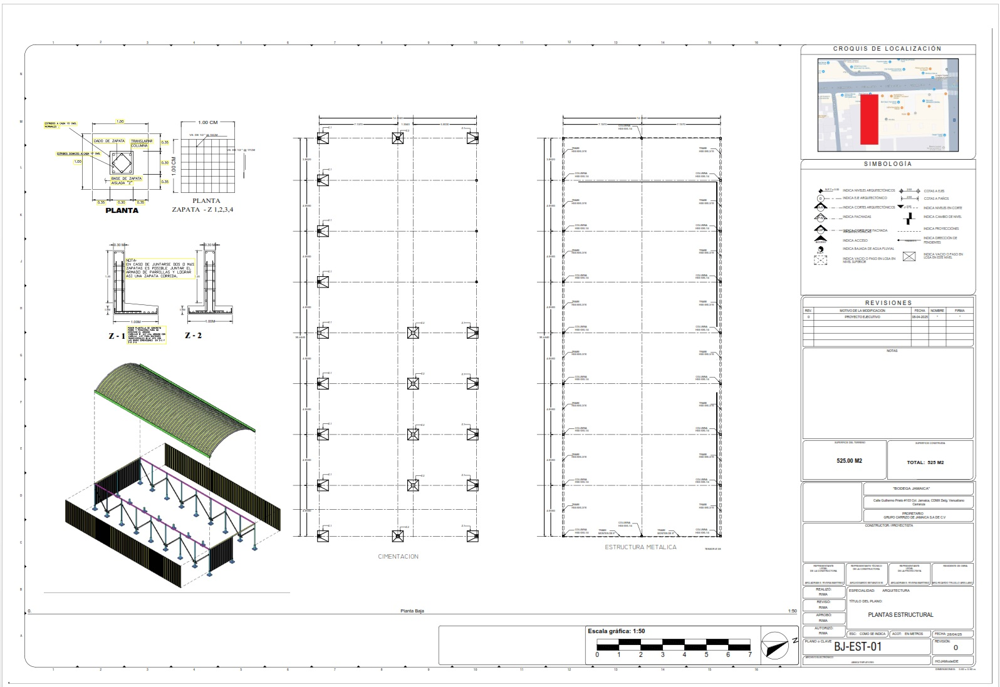
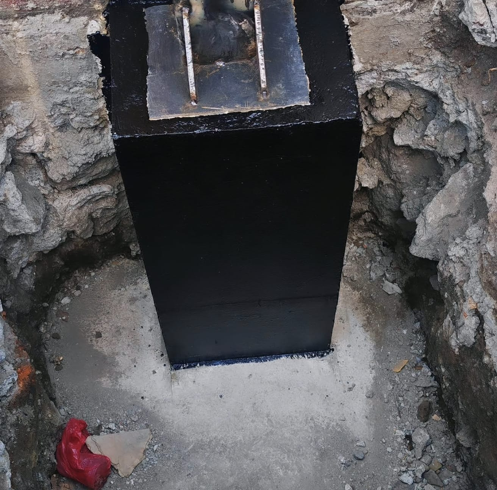

Nave Industrial 850 m²
Guillermo Prieto 103
Ubicación: Zona Jamaica, CDMX | Cubierta: Arcotecho Autosoportante | Entrega: Tiempo Récord (3 Meses)
Plano Estructural

Planta general, simetría de marcos HSS y cuadro de datos.
Detalle de Zapata Aislada

Cimentación calculada con parrilla de varilla y armado de dado expuesto.